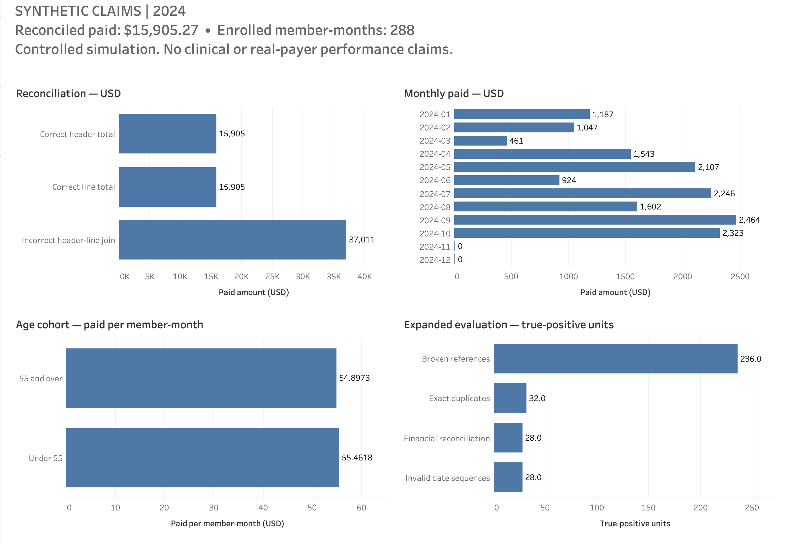

Claims analysis · SQL · Python · Tableau
Healthcare Claims Quality & Financial Reconciliation
A claim header-to-line grain mismatch can silently inflate financial KPIs. Validation and reconciliation controls catch that failure before reporting.
Explore the controlled exampleBusiness problem
A claim can contain multiple service lines. Joining those lines to a claim header repeats its payment on every matching row. Summing that repeated payment produces a plausible-looking total at the wrong grain, distorting spending and downstream utilization reporting.
Analytical design
The analysis uses a controlled synthetic claims dataset and SQL/Python checks for duplicate records, broken relationships, invalid date sequences, and financial reconciliation errors. The validated outputs feed the utilization analysis and Tableau dashboard.
Expected defect labels are kept separate from detection. Payments use integer cents, and utilization rates use explicitly defined enrollment denominators.
Key finding
Header payments, independently summed line payments, and a correctly preaggregated join agree. The reporting control is to reconcile those totals before releasing the KPI.
Validation approach
Controlled defect scenarios are evaluated alongside valid lookalike cases to check both missed errors and overflagging. Monthly and cohort totals reconcile to the same baseline, and months with coverage but no claims retain zero activity.
Automated tests and clean-install checks cover the workflow. The packaged Tableau workbook opens successfully, and its dashboard panels reconcile to the validated source results.
Dashboard
{kind=link}

Open full-resolution dashboard
The Tableau dashboard covers spending reconciliation, monthly utilization, cohort comparisons, and data-quality results. The browser explorer provides the underlying period filters, cohort views, and join comparison.
Limitations
All claims are synthetic; no patient, payer, or employer data are used. Controlled detection results do not estimate real-world performance. Generated cohort differences and zero-claim months do not establish clinical effects or seasonal demand.